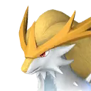
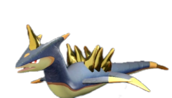
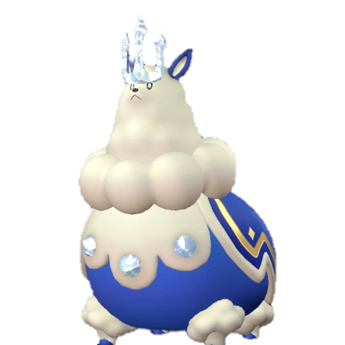
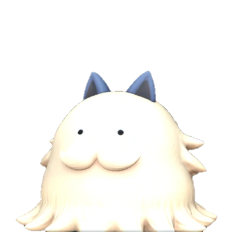
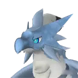
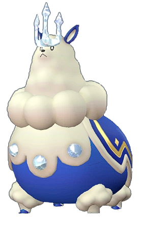
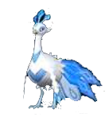
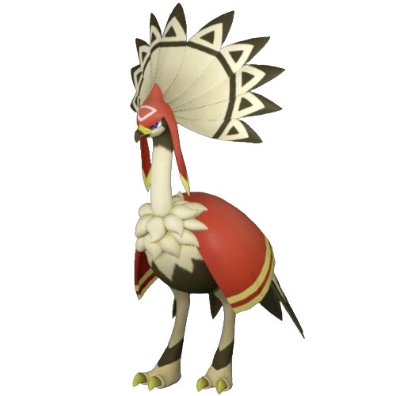
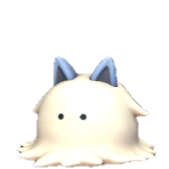

🧺 Best Gathering Pals in Palworld (1.0 Rankings)
Looking for the best Pals to harvest crops and berries? Palworld 1.0 reworked the entire work suitability system — level caps went up and many Pals got new values, so most pre-1.0 tier lists are outdated. This ranking is generated from extracted 1.0 game data and covers all 112 Pals with gathering suitability.
Quick picks
- Best overall: Jetragon — Gathering Lv8
- Best early game: Robinquill Terra (#57) — Gathering Lv3, low Paldeck number so you can catch it early
Full ranking — all 112 gathering Pals
| # | Pal | Gathering | Element | Other work | How to get |
|---|---|---|---|---|---|
| 1 | Lv8 | Dragon | — | ✅ Wild | |
| 2 | Lv7 | Dark | — | 🥚 Breed only | |
| 3 | Lv7 | Neutral | — | 🥚 Breed only | |
| 4 | Lv7 | Neutral | Lumbering 7 | 🥚 Breed only | |
| 5 | Lv6 | Dark | Medicine Production 7, Handiwork 5 | ✅ Wild | |
| 6 | Lv6 | Dark | Handiwork 6, Medicine Production 5, Transporting 2 | 🥚 Breed only | |
| 7 | Lv6 | Grass | Planting 7, Handiwork 5, Medicine Production 5 | ✅ Wild | |
| 8 | Lv5 | Grass/Ground | Planting 5, Mining 3 | 🥚 Breed only | |
| 9 | Lv5 | Dark | — | 🥚 Breed only | |
| 10 | Lv5 | Dark | — | 🥚 Breed only | |
| 11 | Lv5 | Grass | Handiwork 5, Planting 4, Lumbering 3, Transporting 3 | ✅ Wild | |
| 12 |  Gildane #154 | Lv5 | Ground | — | 🥚 Breed only |
| 13 | Lv5 | Neutral | Handiwork 6 | 🥚 Breed only | |
| 14 | Lv5 | Grass | Planting 5 | 🥚 Breed only | |
| 15 | Lv5 | Dark | Transporting 5 | 🥚 Breed only | |
| 16 | Lv5 | Fire | Kindling 8, Handiwork 6, Transporting 5 | 🥚 Breed only | |
| 17 | Lv5 | Dragon/Water | Watering 8 | 🥚 Breed only | |
| 18 | Lv5 | Grass/Dark | Planting 8, Handiwork 6, Medicine Production 6, Transporting | 🥚 Breed only | |
| 19 | Lv4 | Grass | Planting 4, Handiwork 4, Medicine Production 4, Lumbering 3 | ✅ Wild | |
| 20 | Lv4 | Grass | Mining 5, Planting 4 | 🥚 Breed only | |
| 21 | Lv4 | Dark | Mining 4 | ✅ Wild | |
| 22 | Lv4 | Dragon/Grass | Planting 5, Transporting 4, Mining 3, Handiwork 2 | 🥚 Breed only | |
| 23 | Lv4 | Grass | Planting 6, Handiwork 4, Transporting 2 | 🥚 Breed only | |
| 24 | Lv4 | Dark | Handiwork 4, Transporting 3, Lumbering 2 | 🥚 Breed only | |
| 25 | Lv4 | Neutral | Lumbering 7 | 🥚 Breed only | |
| 26 | Lv4 | Dark | Lumbering 8 | 🥚 Breed only | |
| 27 | Lv4 | Ground | Handiwork 3, Mining 2, Transporting 1 | 🥚 Breed only | |
| 28 | Lv4 | Grass | Planting 6, Medicine Production 6, Handiwork 4 | 🥚 Breed only | |
| 29 | Lv4 | Dark/Neutral | Handiwork 8, Transporting 2 | 🥚 Breed only | |
| 30 | Lv4 | Grass | Medicine Production 8, Planting 6, Handiwork 6, Transporting | 🥚 Breed only | |
| 31 | Lv3 | Grass/Ground | Handiwork 3, Lumbering 2, Medicine Production 2, Transportin | ✅ Wild | |
| 32 | Lv3 | Grass | Planting 3, Handiwork 3, Medicine Production 3, Transporting | ✅ Wild | |
| 33 | Lv3 | Grass | Farming 3, Planting 2, Handiwork 2, Lumbering 2, Medicine Pr | ✅ Wild | |
| 34 | Lv3 | Neutral | — | ✅ Wild | |
| 35 | Lv3 | Dark | Handiwork 3, Medicine Production 2, Transporting 2 | ✅ Wild | |
| 36 | Lv3 | Grass | Handiwork 3, Planting 2, Lumbering 2, Transporting 2, Medici | ✅ Wild | |
| 37 |  Surfent Terra #77 | Lv3 | Ground | — | ✅ Wild |
| 38 | Lv3 | Grass | Planting 4, Medicine Production 4, Handiwork 3, Transporting | ✅ Wild | |
| 39 | Lv3 | Grass/Fire | Kindling 4, Medicine Production 4, Handiwork 3, Transporting | 🥚 Breed only | |
| 40 | Lv3 | Grass | Planting 3, Handiwork 3, Transporting 2 | 🥚 Breed only | |
| 41 | Lv3 | Grass | Planting 3, Transporting 1 | 🥚 Breed only | |
| 42 | Lv3 | Dark/Grass | Planting 3, Transporting 1 | 🥚 Breed only | |
| 43 | Lv3 | Grass | Planting 3, Farming 3, Handiwork 2, Lumbering 2 | ✅ Wild | |
| 44 | Lv3 | Dragon | Transporting 5, Mining 4, Handiwork 2 | ✅ Wild | |
| 45 | Lv3 | Ground/Grass | Mining 6, Transporting 6, Lumbering 5, Planting 3 | 🥚 Breed only | |
| 46 | Lv3 | Ground/Dark | Mining 6, Transporting 6, Lumbering 5, Planting 3 | 🥚 Breed only | |
| 47 | Lv3 | Grass/Dark | Planting 3, Handiwork 3, Lumbering 2 | ✅ Wild | |
| 48 | Lv3 | Fire/Dragon | Kindling 4 | ✅ Wild | |
| 49 | Lv3 | Neutral | Handiwork 4, Lumbering 3, Transporting 3, Medicine Productio | ✅ Wild | |
| 50 | Lv3 | Ground | Mining 4, Transporting 4 | ✅ Wild | |
| 51 | Lv3 | Electric | Electricity Generation 6, Transporting 3 | 🥚 Breed only | |
| 52 | Lv2 | Neutral | — | ✅ Wild | |
| 53 |  Kingpaca Cryst #21 | Lv2 | Ice | Cooling 4 | 🥚 Breed only |
| 54 | Lv2 | Ice | Handiwork 3, Transporting 3, Cooling 2 | ✅ Wild | |
| 55 |  Sweepa #36 | Lv2 | Ice | Cooling 3 | ✅ Wild |
| 56 | Lv2 | Grass | Planting 2, Handiwork 2, Transporting 1 | 🥚 Breed only | |
| 57 | Lv2 | Neutral | — | ✅ Wild | |
| 58 | Lv2 | Neutral | — | ✅ Wild | |
| 59 | Lv2 | Dark | Mining 3, Transporting 2 | ✅ Wild | |
| 60 | Lv2 | Grass | Planting 2, Handiwork 2, Medicine Production 2, Transporting | ✅ Wild | |
| 61 | Lv2 | Grass | Planting 2, Medicine Production 2 | ✅ Wild | |
| 62 | Lv2 | Grass | Planting 2, Handiwork 2, Medicine Production 1, Transporting | ✅ Wild | |
| 63 | Lv2 | Grass | Planting 3, Lumbering 3, Transporting 3, Mining 2 | 🥚 Breed only | |
| 64 | Lv2 | Neutral | Handiwork 4, Transporting 2 | ✅ Wild | |
| 65 | Lv2 | Electric | Transporting 5, Electricity Generation 4 | ✅ Wild | |
| 66 |  Beakon Cryst #96 | Lv2 | Ice | Cooling 5, Transporting 5 | 🥚 Breed only |
| 67 |  Ice Kingpaca #98 | Lv2 | Ice | Cooling 4 | ✅ Wild |
| 68 |  Frostplume #114 | Lv2 | Ice | Cooling 4 | 🥚 Breed only |
| 69 |  Dazemu #123 | Lv2 | Ground | — | ✅ Wild |
| 70 | Lv2 | Grass | Planting 3, Handiwork 3, Medicine Production 3 | ✅ Wild | |
| 71 | Lv2 | Neutral | — | ✅ Wild | |
| 72 | Lv2 | Water/Fire | Kindling 3, Lumbering 3, Watering 2 | 🥚 Breed only | |
| 73 | Lv2 | Dark/Fire | Kindling 3, Handiwork 3, Mining 3, Farming 2 | ✅ Wild | |
| 74 | Lv2 | Dark/Ground | Lumbering 4, Medicine Production 2 | 🥚 Breed only | |
| 75 | Lv2 | Electric/Ground | Lumbering 4, Electricity Generation 3, Medicine Production 2 | 🥚 Breed only | |
| 76 | Lv2 | Grass/Dark | Planting 3, Medicine Production 3, Handiwork 1, Transporting | ✅ Wild | |
| 77 | Lv2 | Dark | — | 🥚 Breed only | |
| 78 | Lv2 | Dark/Ice | Cooling 2 | 🥚 Breed only | |
| 79 | Lv2 | Neutral | — | 🥚 Breed only | |
| 80 | Lv2 | Dark | — | ✅ Wild | |
| 81 | Lv2 | Dark/Dragon | — | 🥚 Breed only | |
| 82 | Lv1 | Neutral | Handiwork 1, Mining 1, Transporting 1 | ✅ Wild | |
| 83 | Lv1 | Neutral | Farming 1 | ✅ Wild | |
| 84 | Lv1 | Grass | Planting 1, Handiwork 1, Lumbering 1, Medicine Production 1 | ✅ Wild | |
| 85 | Lv1 | Neutral | Farming 1 | ✅ Wild | |
| 86 | Lv1 | Neutral | Farming 2 | ✅ Wild | |
| 87 | Lv1 | Water | Watering 1, Handiwork 1, Transporting 1 | ✅ Wild | |
| 88 | Lv1 | Water/Dark | Handiwork 2, Watering 1, Transporting 1 | 🥚 Breed only | |
| 89 | Lv1 | Grass/Neutral | Planting 1, Transporting 1 | 🥚 Breed only | |
| 90 | Lv1 | Ground | Lumbering 1, Transporting 1 | 🥚 Breed only | |
| 91 | Lv1 | Grass/Neutral | Planting 1 | 🥚 Breed only | |
| 92 | Lv1 | Dark | — | ✅ Wild | |
| 93 | Lv1 | Dark | Handiwork 1, Transporting 1 | ✅ Wild | |
| 94 | Lv1 | Grass | Planting 1, Handiwork 1, Lumbering 1, Transporting 1 | ✅ Wild | |
| 95 | Lv1 | Dark | — | ✅ Wild | |
| 96 | Lv1 | Dark | Farming 1 | ✅ Wild | |
| 97 | Lv1 | Dark/Water | Transporting 2, Watering 1 | ✅ Wild | |
| 98 | Lv1 | Neutral/Water | Transporting 2, Watering 1 | 🥚 Breed only | |
| 99 | Lv1 | Neutral | — | ✅ Wild | |
| 100 |  Swee #35 | Lv1 | Ice | Cooling 1 | ✅ Wild |
| 101 | Lv1 | Ground | Transporting 2, Handiwork 1 | ✅ Wild | |
| 102 | Lv1 | Neutral | Handiwork 1, Transporting 1 | 🥚 Breed only | |
| 103 | Lv1 | Neutral | — | ✅ Wild | |
| 104 | Lv1 | Fire | Kindling 2, Handiwork 2, Transporting 1 | ✅ Wild | |
| 105 | Lv1 | Dark | Handiwork 1, Transporting 1 | ✅ Wild | |
| 106 | Lv1 | Fire | Lumbering 3, Kindling 2, Handiwork 2, Transporting 2 | ✅ Wild | |
| 107 | Lv1 | Fire/Dark | Lumbering 5, Kindling 2, Handiwork 2, Transporting 2 | 🥚 Breed only | |
| 108 | Lv1 | Ice/Dragon | Cooling 2 | ✅ Wild | |
| 109 | Lv1 | Water | Watering 4, Lumbering 4 | 🥚 Breed only | |
| 110 | Lv1 | Neutral | Transporting 2 | ✅ Wild | |
| 111 | Lv1 | Neutral | — | 🥚 Breed only | |
| 112 | Lv1 | Neutral | — | 🥚 Breed only |
🥚 Breed-only Pal? Use the PalTool reverse breeding calculator to find the shortest breeding path from Pals you can catch in the wild.
Work rankings: ⛏️ Mining · 🔥 Kindling · 🔨 Handiwork · 🪓 Lumbering · 📦 Transporting · 🌱 Planting · 💧 Watering · 🧺 Gathering · ⚡ Electricity Generation · 💊 Medicine Production · ❄️ Cooling · 🐄 Farming
Pals by element: 🔥 Fire · 💧 Water · 🌿 Grass · ⚡ Electric · ❄️ Ice · 🪨 Ground · 🌑 Dark · 🐉 Dragon · ⚪ Neutral
Data sourced from Palworld 1.0 game files. Last updated: July 2026.